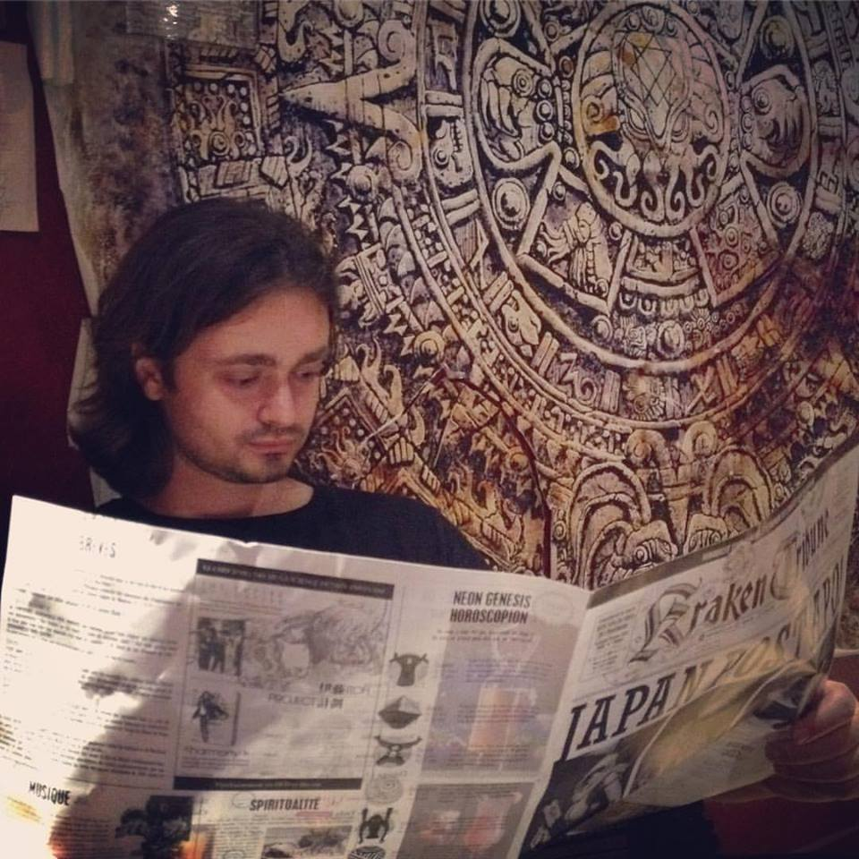

I received my Master's degree in Automation and Control Systems from the
National Mining University of Ukraine (Dnipro), and my Ph.D. from the
International Doctorate School in Information and Communication Technologies
(ICT) at the University of Trento (Italy) under the supervision of Prof. Fabio Massacci. I am currently working
as a research fellow at the Security Research Group at the University of Trento.
Before starting my Ph.D. studies, I worked as a software quality assurance
engineer at Sitecore (Ukrainian office).
My main research interests include software security, vulnerability analysis,
and security certification of Free and Open Source Software.
- Publications
-
-
S. Dashevskyi, D. R. Dos Santos, F. Massacci, and A. Sabetta. "TestREx:
a Testbed for Repeatable Exploits". In Proceedings of the 7th USENIX Workshop on
Cyber Security Experimentation and Test (USENIX CSET), 2014.
-
V.H. Nguyen,S. Dashevskyi, and F. Massacci. "An Automatic Method for
Assessing the Versions Affected by a Vulnerability". Empirical Software
Engineering (ESE), 2015.
-
S. Dashevskyi, A. D. Brucker, and F. Massacci. "On the Security Cost of
Using a Free and Open Source Component in a Proprietary Product". In Proceedings
of the Engineering Secure Software and Systems Conference (ESSoS), 2016
-
I. Pashchenko, S. Dashevskyi, and F. Massacci. "DeltaBench: Differential
Benchmark for Static Analysis Security Testing Tools". In Proceedings of the
International Symposium on Empirical Software Engineering and Measurement
(ESEM), 2017 (to appear).
-
S. Dashevskyi, D. R. dos Santos, F. Massacci, and A. Sabetta. "TestREx:
a Framework for Repeatable Exploits". International Journal of Software Tools
for Technology Transfer (STTT), 2017 (to appear).
- Book chapters
-
-
L. ben Othmane, A. D. Brucker, S. Dashevskyi, and P. Tsalovski,
"Empirical research for software security: foundations and experience". In, L.
ben Othmane, M.G. Jaatun, and E. Weippl, Eds. Taylor & Francis Group, LLC,
2017, ch. "An introduction to data analytics for software security" (to
appear).
- Patents
-
-
A. Sabetta, L. Compagna, S. Ponta, S. Dashevskyi, D.R. Dos Santos, and F.
Massacci. "Multi-Context Exploit Test Management". US Patent App.
-
A. D. Brucker, S. Dashevskyi. "Vulnerability Analysis of Software
Components", US Patent App. 14/965,449, 2015.
- Talks
-
-
A. D. Brucker, S. Dashevskyi, and F. Massacci, "Using Third-party
Components for Building an Application Might be More Dangerous than You Think!".
OWASP AppSec Europe, 2016.
(slides)
(recording)